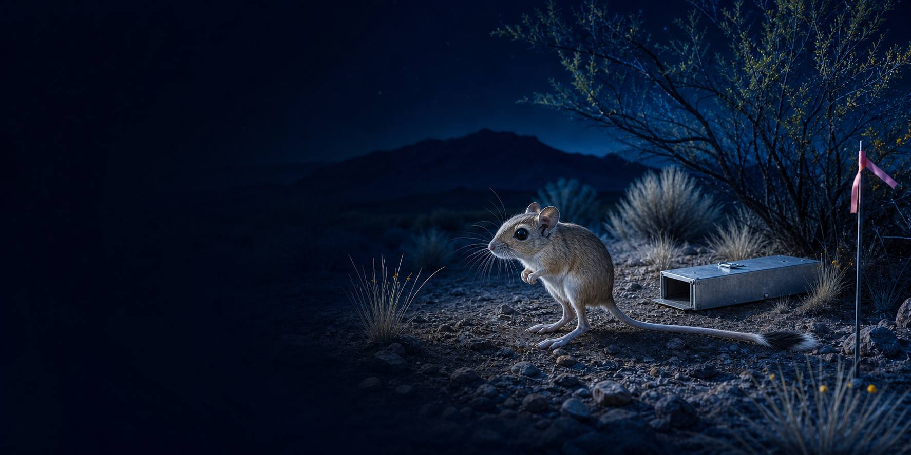

Find a place or species
Start from all 46 bundled sites or follow one of 145 species across its recorded range.

NEON Small Mammal Tracker
Explore where small mammals were caught, how tagged individuals moved through time, and when the data support more than a raw count. Every headline carries its effort, detection, and limits.
Last production verification: July 18, 2026 · Live app opens in a new tab and may cold-start.
A defensible path through the data
The tracker keeps field effort, animal identity, detection support, and uncertainty attached to the experience instead of hiding them behind a polished chart.
Start from all 46 bundled sites or follow one of 145 species across its recorded range.
Open recapture histories, movement, body measurements, QC flags, and shareable dossiers.
Read MNKA, CPUE, detection probability, and supported closed-capture estimates together.
Inspect reviewed trap effort, exclusions, tidy exports, codebook definitions, and exact rows.
Within-site capture activity, community composition, tagged-animal histories, MNKA, and supported detection-corrected estimates—with their sampling qualifications.
Absolute density from CPUE, a fair raw-count contest between biomes, universal rainfall effects, or causation from a short observational record.
Inside the explorer
Move from a country-wide range view to one animal's history without losing the denominator or the caveat that makes the number interpretable.
The national picker sizes sites by recorded captures, identifies the dominant mammal family, and provides an accessible list fallback.
Closed-capture estimates appear only when the bout and recaptures support them. Otherwise, the app says single-night or index-only.
Rank and inspect tagged animals without turning recaptures into new individuals.
Hill diversity, accumulation, composition, and measurement profiles remain separate constructs.
Download event-level records, monthly metrics, a codebook, site reports, and individual cards.
Methods & data
A source row may be an empty trap, a handling record, or one animal in a multi-capture event. The tracker resolves physical opportunity before it calculates catch per effort.
One product in a connected suite
Each app stays independently useful. The Driver Response Atlas integrates only registered evidence; this tracker contributes detection-qualified consumer context, not a causal vote.
Integration layer · registered evidence and context
Timing, composition, and standing stock stay distinct.
Activity, detection, and communities use product-specific effort.
Chemistry is context; invertebrates remain method-stratified.
Ready to explore?
Start with a site you know, follow a species across the network, or load the JORN demonstration and see how field opportunity shapes every result.